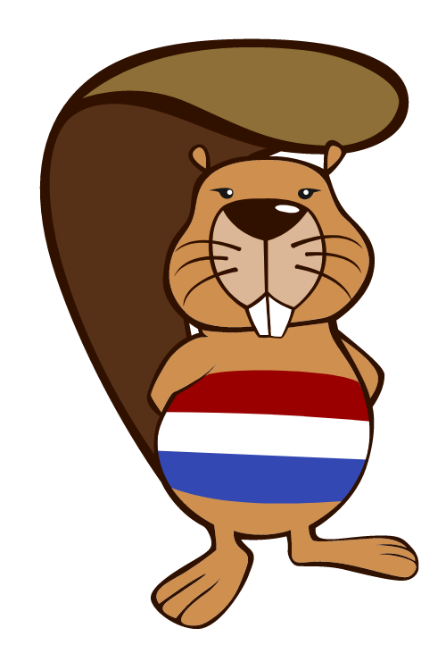
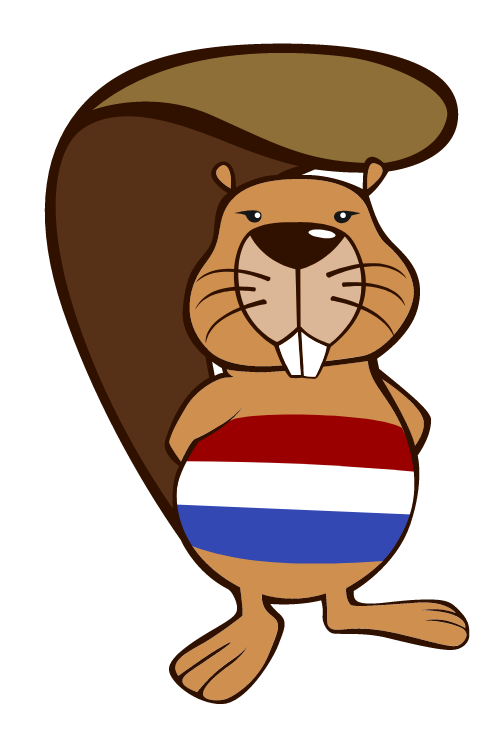
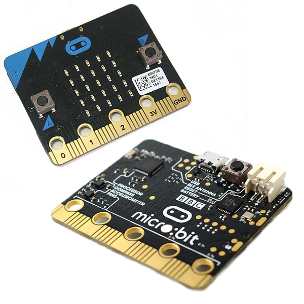

-beverwedstrijd (meerdere keren)
De beverwedstrijd is een soort toets waar je problemen moet oplossen door logisch na te denken en probeert zoveel mogelijk punten te halen. 
De beverwedstrijd is een soort toets waar je problemen moet oplossen door logisch na te denken en probeert zoveel mogelijk punten te halen. 
De demomarkt is een soort markt (natuurlijk) waar je projecten die je voorbereid hebt presenteerd aan mensen die langskomen en probeert aan ze uit te leggen waarom dit nodig is. 
Een gamejam is een project waar je een aantal uur krijgt waar je de hele tijd werkt aan een spel die je probeert in dat aantal uur af te maken, dit doe je om te kijken hoe goed spel je kan maken in zulke korte tijd
-deze lijst wordt nog uigebreid wanneer ik meer projecten doe